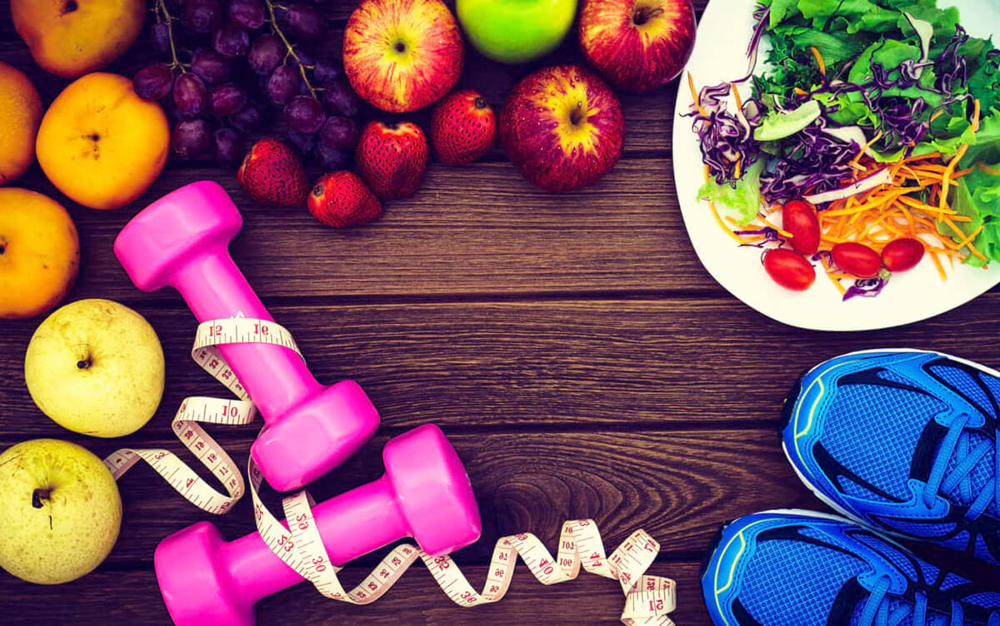

Блог
Узнать больше.png) Забота о себе
Забота о себе
Уход за кожей
Важность домашнего ухода за кожей лиц
Кожа лица — отражение состояния всего организма. Ежедневный уход за кожей необходим, чтобы сохранить ее здоровой и сияющей.
Зачем нужен домашний уход за лицом? Издание Marie Claire отмечает, что домашний уход помогает сохранить здоровье, красоту и молодость, позволяет бороться с обезвоживанием, гиперпигментацией, первыми признаками старения кожи и появлением мимических морщин. Какие есть этапы ухода за лицом? Уход за кожей состоит из нескольких этапов: демакияж, очищение, тонизирование, увлажнение, питание, восстановление и защита.
Демакияж
Самое примитивное и распространенное понимание здоровья - это состояние организма, когда нет болезни. Даже медики нередко действуют по нему: «Нет болезни - здоров, нам с тобой нечего делать. Вот когда заболеешь, приходи». Но здоровье - это не что-то постоянное и неизменное. Оно тоже нуждается во внимании и контроле. Здоровье необходимо поддерживать и укреплять. Думаю, в будущем, когда главной заботой медицины станет предупредить болезнь, а не лечить ее, врач будет вести не «историю болезни», а «историю здоровья».
Как правильно очищать лицо? Эксперт в сфере укрепления здоровья Урви Далал рекомендует при снятии макияжа удалить косметику с губ, а затем перейти к глазам. Кожа вокруг глаз очень тонкая и нежная, поэтому будьте очень осторожны и не трите глаза. Для достижения наилучших результатов смочите ватный диск в средстве для снятия макияжа и приложите его к глазам на несколько секунд. Это смягчит и ослабит макияж, после чего его можно нежно стереть. Журнал Vogue рекомендует использовать для демакияжа такие средства:
салфетки для снятия макияж;
мицеллярную воду;
гидрофильное масло;
гидрофильное масло;
двухфазное средство для снятия макияжа.
Последним шагом станет снятие основы. Нанесите средство для демакияжа на все лицо, затем снимите его с помощью ватного диска, после чего умойтесь.
Наша кожа нуждается в уходе вне зависимости от пола, но в большинстве случаев у женщин гораздо больше косметических средств: всевозможные кремы, гели и сыворотки окружают на полочке в ванной одинокий мужской лосьон после бритья. И хотя кожа мужчин не так подвержена сухости и потере упругости, базовый уход ей все же необходим. Из чего он должен состоять?
Отличия мужской и женской кожи
В детстве кожа мальчиков и девочек не имеет отличий, но с наступлением периода полового созревания в игру вступает гормон тестостерон, который меняет мужскую кожу и наделяет ее особыми свойствами. Чем же мужская кожа отличается от женской?
1. Плотность. Кожа мужчин примерно на 20% толще женской, кроме того, в ее клетках содержится больше коллагена – белка, отвечающего за прочность, упругость и эластичность. Поэтому морщины на мужской коже появляются позже, чем у женщин.
2. Жирность. Поры на коже мужчин шире, а сальные железы работают активнее, в связи с чем мужчины реже страдают от сухости кожи, но вот факторов, провоцирующих акне, в этом случае гораздо больше.
3. Чувствительность. Регулярное бритье раздражает кожу. Сбривая волоски, бритва задевает верхний слой эпидермиса, нарушая его и делая чувствительнее.
Выбирая косметику, вовсе не обязательно искать продукт с пометкой «для мужчин». Большинство средств подходят как женщинам, так и мужчинам и подбираются в зависимости от типа кожи и ее потребностей. Если вы сомневаетесь, подобрать подходящие средства поможет косметолог.
Базовый уход за мужской кожей
Мужчины меньше времени проводят перед зеркалом, поэтому мужской уход должен быть простым, быстрым и эффективным.
1. Очищение. Как мы уже говорили, мужская кожа более жирная, излишки себума смешиваются с частичками пыли и грязи, забивают поры и провоцируют активное размножение бактерий, в результате появляются черные точки и прыщи.
2. Отшелушивание. Этим этапом ухода часто пренебрегают, но он очень важен для мужской кожи. Освобождать кожу от отмерших клеток необходимо, чтобы стимулировать естественные процессы обновления и глубоко очищать поры. Использовать скраб достаточно 1-2 раз в неделю.
3. Увлажнение. Не только сухой, раздраженной коже необходимо увлажнение, но и жирной, ведь именно из-за недостатка влаги, себум выделяется активнее. Наносить увлажняющий крем следует ежедневно утром и вечером после очищения.
4. Уход за кожей губ. Кожа губ тонкая и быстро теряет влагу, поэтому из-за неблагоприятных погодных условий она грубеет и трескается. Бальзамы для ухода за кожей губ из аптеки не имеют цвета и запаха, они хорошо увлажняют, заживляют и защищают от повреждений. Использовать их можно по мере необходимости.
Если основные этапы уход за кожей стали таким же привычным, как бритье, то можно смело добавлять дополнительные шаги, например, сыворотки или маски для лица.
Чтобы улучшить свое здоровье можете ознакомиться с другими окнами сайта:
Блог
Узнать больше.png)